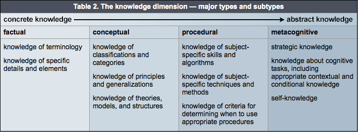
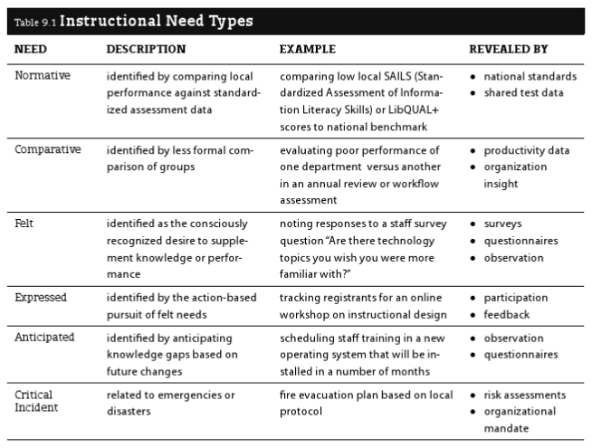
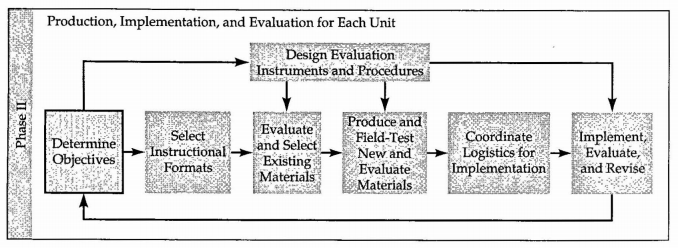

pkb contents
> sotl | just under 5103 words | updated 10/27/2017
-
Education vs. training:
Booth (2011, p. 51) notes that some people distinguish between education and training on the basis of transfer (which education aims to promote, but training does not).
-
-
Academia vs. real-world learning:
Via Bransford et al. (2014), academic work is typically more solitary and cognitive than other contexts, although collaboration and use of tools may be increasingly present in some disciplines.
-
Learning environments vs. instructional systems:
This distinction comes from Gagné:
"learning environments
are constructivist educational spaces that provide the framework for self-discovery, whereas
instructional systems
are behaviorist/cognitivist spaces that 'focus on telling ... learners what they need to know'" (Booth, 2011, p. 87).
Per Booth (2011), core knowledge and skills for teaching (what she calls “instructional literacy”) includes:
-
Capacity for
reflective practice
(not just after the fact, but primarily in the moment);
-
Knowledge of
educational theories,
consisting of
-
Learning theories,
historically the province of psychology, more abstract and fundamental;
-
Instructional theories,
oriented towards teacher practice AKA
pedagogy;
-
Curriculum theories,
focused on 'genre' in teaching;
-
Mastery of
teaching technologies
(for collaboration, assessment, etc.); and
-
Skill in
instructional design,
a structured design process that creates learning objects, etc. for learning interactions
Booth also presents her
USER method
primarily as an instructional design model, secondarily as an "instructional literacy framework that encourages you to [thirdly] reflect on your process in order to become a 'student of learning” as you teach' (p. 95).
From lectures by Philip J. Reed at the University of Washington iSchool, following Booth (2011) and Keller (1983):
-
CLASSICAL (philosophical):
-
Rationalism:
(reason and debate)
-
Empiricism
(observation and experimentation)
-
SCIENTIFIC
-
PSYCHOLOGY
Reed notes that these approaches are both comfortable assessing learning through behavior change, not so for constructivism.
-
Behaviorism
(B. F. Skinner, rote memorization, reinforcement, feedback); dominant c. 1950s as an educational theory but still has currency in psychology, still embedded in common teaching and learning practices; associated with Industrial Revolution
-
Cognitivism
(Jean Piaget, David Ausubel) focuses on learners' information processing AKA "assimilation of information into mental models" (Reed, 2017; AKA schemata, Booth, 2011, p. 44); "how to organize instruction" for "acquisition and retention of knowledge and skills", "also studied in relation to individual differences in ability and learning style" (Keller, 1983); note that this includes a much more active role for the student, believing that "knowledge is something that depends on your perception and how you put things together" (Reed, 2017)
-
Human development and its implications for learning (Piaget's
readiness
concept)
-
Gestalt theorists
-
EDUCATION
-
Constructivism
(John Dewey, Lev Vygotsky) focuses on how
learners
"construct their own learning process" (Reed, 2017) through "observation, translation, and imitation (mimesis, socialization, and modeling)" (Booth, 2011, p. 62), subject to
social influences
; mainstream view in education, strugges with the issue of assessment
-
Situated learning
-
Zone of proximal development
Per Booth (2011), and see also Brown et al. (2014):
-
Environment
-
"practical factors such as room dimensions, furniture, and seating capacity; ... lighting and temperature;
-
"technical factors such as computing technology and presentation media;
-
"cultural elements such as language accessibility and inclusiveness; and
-
"instructional elements such as tone, pacing, classroom dynamics, discussion management, and opportunities for interaction" (Booth, 2011, p. 45)
-
Memory
-
Manage cognitive overload (manage environment, curate inputs so they are of better quality)
-
Teach mnemonics (structuring information logically AKA chunking; alphabetically; metaphorically; spatially)
-
Enable elaboration (association with existing information)
-
Motivation
-
Address relevant needs (Maslow; deprivation needs vs. growth needs)
-
Support intrinsic (inherent/already internalized) versus extrinsic (incentivized/coerced) motivation
as below
-
Prior knowledge
i.e. schemata AKA mental models; related to TRANSFER
-
Readiness for learning (Piaget)
-
Respecting prior knowledge
-
Activating prior knowledge
Motivation an extremely important part of learning; it is
why
people learn, rather than
how.
It's important to know that
optimal motivation is moderate motivation,
and excess motivation is anxiety; this should be considered in motivational design, e.g. when setting the level of risk/reward (it should be moderate).
In addition to the Keller model below, Bransford et al. (2014) credit the following factors with increasing motivation:
-
A learning orientation and growth mindset (see Dweck et al., 2014) versus a performance orientation
-
Social recognition, shared work, and solidarity
Keller (1983) writes practically on motivation but grounds it in his prior theoretical work. This work, in keeping with field theory/social learning theory, starts from the assumption that B, behavior is a function of E, the environment and P, the individual person,
B=f(E,P).
Then, as categories of behavior, Keller distinguishes between:
-
Effort
= P's level of engagement and discipline, "a direct indicator of motivation" [jtck: consider mental health though..];
-
Performance
= f(motivation/effort, ability, opportunity); and
-
Consequences
= performance + (benefits to the individual = reinforce motivation)
Determinants E and P may be examined for each behavior, identifying instructional strategies:
Interest AKA attention = f(trait_curiosity, presentation); see
instructional messages.
-
Simulate curiosity
= f(novelty, paradox, incongruity, complexity, abruptness, conflict)
-
Perceptual vs.
epistemic curiosity
-
Trait vs.
state curiosity
-
Note that curiosity can be fatigued by excessive stimulation
-
Appeal to emotions, personal experience, the familiar e.g. with analogies, metaphors, anecdotes, questions
-
Sustain curiosity:
-
Allowance to explore
-
Lower the cost of failure
-
Occasional surprises and humor
-
Make the familiar strange and vice versa
-
Separate convergent from divergent thinking (see
design thinking)
-
Use the
inquiry method
where students are given a genuine problem to solve, with the understanding that they are learning to navigate the process of inquiry
Relevance = f(alignment, clear_connections). Drawing from
drive theory,
e.g. Maslow, Keller proposes a typology of personal (relevant to self) vs. instrumental (relevant to goals) vs. cultural (relevant to group)
-
Personal
-
Promote a sense of
achievement
by combining "standards of excellence" with moderate risks and non-zero sum grading
-
Promote
empowerment
by allowing choice, responsibility, and influence
-
Promote
affiliation
by establishing trust, which may include non-zero sum grading
-
Instrumental
relevance can be made clear through learning objectives
-
Cultural
relevance is a matter of inclusive content, approaches, and environments, but also raises the question of whether a learner's culture places a high value on the type of education being offered
Expectancy AKA confidence = f(challenge, support), similar to "zone of proximal development"
-
Address self-fulfilling prophecies of failure
-
[attribution theory/locus of control/personal causation/learned helplessness]
-
Provide meaningful successes (not trivial small wins; learners know it won't transfer)
-
Make the pathway to success clear (mastery learning)
-
Give feedback that clarifies the connection between efforts and outcomes
Satisfaction = f(intrinsic_reinforcement, extrinsic_reinforcement)
-
To preserve intrinsic motivation (which can be destroyed by extrinsic reinforcement):
-
give "endogeneous" rewards that "customarily or naturally follows from a task"
-
give exogeneous rewards unexpectedly
-
Give motivational feedback verbally and immediately
-
Time informative/formative feedback (rather than evaluative/summative feedback) such that it is quickly actionable
Along with
recall
(retrieve and apply this knowledge if a similar situation arises), Booth (2011, p. 43) says a fundamental goal of instruction is transfer (retrieve and apply this in novel ways). Interestingly, per Bransford et al. (2014):
-
"Different kinds of learning experiences can look equivalent when test of learning focus solely on remembering ... but they can look quite different when tests of transfer are used" (p. 51).
-
Classical education practices assumed transfer in their doctrine of "formal discipline", i.e. their belief that studying Latin trained the mind like a muscle for other tasks (probably not true of minds or muscles).
-
Some researchers treat transfer as a matter of conceptual overlap, others as a matter of skill overlap.
-
Near vs. far:
"[T]hese terms distinguish the closeness or distance [or dis/similarity] between the original learning and the transfer task" (Leberman, 2006).
-
Positive vs. negative:
"When learning in one context improves[/inhibits] learning or performance in another context" (Leberman, 2006).
-
Simple vs. complex:
"Simple transfer happens when little or no effort is required to apply what has been learned in one situation to a new situation [and the opposite for complex transfer]" (Leberman, 2006).
-
Automatic vs. mindful:
" When an individual responds spontaneously within a transfer situation, which is very similar to the learning situation then this is automatic transfer … In contrast, mindful [or] high road transfer is deliberate and involves conscious thought and intellectual effort, and occurs in situations where there are significant gaps or differences between the original and the transfer situations" (Leberman, 2006).
-
Overzealous:
" Of particular concern are situations where students transfer skills, knowledge, and routines that are effective for the task at hand but may nevertheless be suboptimal in the long run because they block additional learning. We will call this overzealous transfer (OZT) — people transfer solutions that appear to be positive because they are working well enough, but they are nevertheless negative with respect to learning what is new" (Schwartz et al., 2012).
-
Provide transfer-supportive
learning experiences:
-
Something must be learned with sufficient depth before it can be transferred
-
Understanding promotes transfer; mere memorization does not
-
Let students engage with real problems and struggle a bit before lecturing (increases benefit of lecture)
-
Learning takes time; allow for it
-
Give feedback on transfer---how students are applying concepts in varying contexts
-
Attend to
motivation
-
Present
abstractions
and underlying logic, since "[k]nowledge that is overly contextualized [i.e., 'narrowly tailored to a given situation', NOT 'transparently placed in context'] can reduce transfer" (note that this is in keeping with cognitivist learning theories).
-
Make strong contrasts to facilitate pattern recognition
-
Show/practice applications in a range of contexts
-
Work on a problem at length, then use "what if" thought experiments
-
Help students see and represent their own problems/work in wider contexts
-
Promote metacognition
-
Activate
prior knowledge:
-
Use "graduated prompting" to cue for transfer
-
Be aware of common conceptual misunderstandings for a given field: "teachers must strive to make students' thinking visible and find ways to help them reconceptualize faulty conceptions" (p. 71)
-
Be aware that prior knowledge is not just of an individual student's construction; it is also cultural
The learning theories above have consequent instructional theories. Using a series of questions from Ertmer and Newby, Booth (2011, p. 73) contrasts them as follows:
|
How does learning occur?
|
through guided behavioral change made evident by accurate answers/consistent performance
|
through mental processes that result in the formation of concepts and schema
|
through experience, sociocultural influence, and metacognition
|
|
What factors influence learning?
|
external (environment, instruction)
|
internal (cognitive processes, readiness, aptitude)
|
internal (emotional); exter (social, environmental)
|
|
What is the role of memory?
|
repetition and reinforcement facilitates memorization
|
short- and long-term memory interact to facilitate schema building
|
activated and influenced by meaningful learner experiences
|
|
How does transfer occur?
|
encouraged by positive reinforcement, learners make associations in the form of "correct" answers
|
learners form mental models in order to apply concepts and ideas to new scenarios
|
through perception of personally-relevant knowledge and application of knowledge
|
|
What types of learning are best suited to this theory?
|
fact-based; practical
|
concept-based; procedural
|
problem-based; collaborative
|
|
What aspects are important to instructional design?
|
provide feedback to reinforce learning; provide opportunities for practice and exchange
|
present information with targeted efficiency in order to stimulate memory and the formation of structured knowledge
|
provides learners with opportunties to investigate content in authentic settings
|
|
What teaching strategies facilitate learning?
|
instructor-centered; learner/instructor interaction; information organization and repetition
|
instructor-centered; strategic information presentation; targeted media use; cognitive load management; learner scaffolding
|
learner-centered; authentic stimulation; collaborative activity; hands-on practice; questioning techniques; critical inquiry
|
Per EC (2015), "Alignment is when the:
-
OBJECTIVES
[i.e. targets] articulate the knowledge and skills you want students to acquire by the end of the course
-
ASSESSMENTS
allow the instructor to check the degree to which the students are meeting the learning objectives
-
INSTRUCTIONAL STRATEGIES
are chosen to foster student learning towards meeting the objectives ...
Aligning these three components is a dynamic process, since a change in one necessarily affects the other two."
Phillips and Phillips (2010) attribute the original use of the term in instructional design to Robert Mager for his 1967 book
Preparing instructional objectives.
See also
http://www-tandfonline-com.offcampus.lib.washington.edu/doi/abs/10.1080/0142159022020687?src=recsys
Per Booth (2011), targets form a hierarchy:
-
OUTCOMES
= hoped-for lasting changes
-
GOALS
= express a theory of how to produce outcomes
-
OBJECTIVES
= strategies/skills needed to attain goals
The Phillips and Phillips (2010) model is one common model for describing and evaluating the various levels of organizational impact a training may have;
there are others,
but in any case the point is to cover the entire "chain of impact" to which an instructional project belongs and depends on:
|
1: Reaction
|
Reaction to the project or program, including the perceived value
|
Relevance, importance, usefulness, appropriateness, intent to use, motivation to take action
|
|
2: Learning
|
Learning to use the content and materials, including the confidence to use what was learned
|
Skills, knowledge, capacity, competencies, confidence, contacts
|
|
3: Application [Behavior]
|
Use of content and materials in the work environment, including progress with actual items and implementation
|
Extent of use, task completion, frequency of use, actions completed, success with use, barriers to use, enablers to use
|
|
4: Impact [Results]
|
The consequences of the use of the content and materials expressed as business impact measures
|
Productivity, revenue, quality, time, efficiency, customer satisfaction, employee engagement
|
|
5: ROI
|
Comparison of monetary benefits from program to program costs
|
Benefit-cost ratio (BCR), ROI (%), payback period
|
Source:
Phillips & Phillips, 2010, p. 18.
-
[I]mprove the impact of instruction", which is "particularly [true] when participants have had a hand in defining [the LOs]” (Booth, 2011; read the Eberly Center's
discussion of how)
-
Support the instructor in reflecting and improving (Diamond, 2008)
-
"Serve as the basis for selecting instructional methods" (Diamond, 2008) and "allow you to structure measurable learning interactions" (Booth, 2011)
-
Proactively "[c]ommunicate to your students your expectations and how the students will be assessed", which facilitates student self-assessment, and therefore facilitates learning (Diamond, 2008)
-
Retroactively "[s]erve as the basis for your assessment of student achievement" (Diamond, 2008)
-
Student-centered:
Focus on what students should do or be able to do, not what instructors hope to 'cover' (EC, 2015). Diamond
-
Aligned,
if possible, with institutional, disciplinary, or other standards of practice and statements of purpose (Diamond, 2008)
-
Measurable,
not vague ("What would students do differently if they really 'understand' or 'appreciate' X?" ask EC, 2015). Quoted from Phillips and Phillips (2010) and echoed by Diamond (2008), LOs should speak to:
-
Performance ---
what the participant will be able to do during the program {see
Bloom's modified taxonomy}
-
Condition ---
circumstances under which the participant will perform the task
-
Criteria ---
degree or level [i.e. **quantification]** of proficiency that is necessary to perform the job" {see
Schulman's learning process}
Diamond (2008) describes how instructors have struggled particularly with shifting perspective from content- to outcomes-focused; with writing "behavioral" objectives that are measurable but not too narrow; and with writing LOs at the right level of granularity, not too stultifying.
See Dr. Leslie Owen Wilson's
great discussion
for backstory. In brief, the modified taxonomy has a knowledge dimension and a cognitive process dimension. It can be used for:
-
Analyzing content and generating suitable learning objectives
-
Evaluating learning objectives
-
Scaffolding learning materials or instructional messages
Per the
Center for Excellence in Learning and Teaching
at Iowa State University:


Booth (2011) suggests task analysis as a strategy for decomposing one's own expert procedural knowledge and thereby reacquainting oneself with the topic from a beginner's perspective.
Alonso et al. (2008) characterize Schulman's learning process model (2002) as having the following stages, representing different degrees of mastery that an objective may specify:
-
engagement and motivation
-
knowledge and understanding
-
performance and action
-
reflection and critique
-
judgement and design
-
commitment and identity
From Diamond (2008, pp. 135-136):
-
Government.
When given a major decision made by a governmental leader, you will be able to identify the major factors that the leader had to consider and discuss why the action was taken and what apparent trade-offs were made.
-
Economics.
Demonstrate graphically and explain how a change in expectations will affect the loanable funds market. (Begin with an appropriately labeled graph that represents the initial equilibrium.)
-
Management.
Identify (based on readings, case studies, and/ or personal experiences) those activities that are most likely to distinguish effective, well-managed technology development programs from ineffective programs.
-
Statistics.
When given two events, you will be able to determine whether they are independent or whether there is a relationship between them (that is, one event affects the probability of the other). On the basis of this determination, you will be able to select and use the appropriate rules of conditional probability to determine the probability that a certain event will occur.
-
Religion.
When given a definition of the term
religion,
you will be able to identify which of the following characteristics is emphasized: feeling, ritual activity, belief, monotheism, the solitary individual, social valuation, illusion, ultimate reality, and value.
-
Music.
On hearing musical selections, you will be able to identify those that are examples of chamber music and be able to identify the form, texture, and makeup of the ensemble.
-
Art.
When shown a print, you will be able to identify whether it is a woodcut, an etching, or a lithograph, and you will be able to list the characteristics on which this identification was based.
-
Psychology.
When given a case study, you will be able to identify whether it describes a case of schizophrenia and, if it does, which of the following schizophrenic reactions are involved: hebephrenic, catatonic, or paranoid.
From Booth, 2011, p. 116:

Instructional messages should be clearly relevant and actionable ("WIIFM/what's in it for me principle"). In addition, Booth (2011) summarizes Chip and Dan Heath’s best practices for powerful messages, which they organize as an acronym (SUCCESs) but I present here differently:
-
get attention, hold interest:
UNEXPECTED, STORIES
-
facilitate comprehension:
SIMPLE, CONCRETE
-
appeal and persuade:
CREDIBLE, EMOTIONAL
Diamond (2008, p. 128) quotes Theodore Marchese:
"Assessment per se guarantees nothing by way of improvement, no more than a thermometer cures a fever. Only when used in combination with good instruction (that evokes involvement in coherent curricula, etc.) in a program of improvement, can the device strengthen education."
See Torrance (2007) for some additional caution regarding assessment.
Per Booth (2011, p. 81), "a theoretical approach that emphasizes the impact of information technology on learning".
Per Mezirow (2009), transformative learning is a subset of "learning that transforms problematic [NB: different interpretations of this] frames of reference to make them more inclusive, discriminating, reflective, open, and emotionally able to change". Mezirow has defended the importance of rationality in transformative learning practices, contra other theorists in the field.
Per Stevens and Tieman (2017), the origin of PBL was contemporanous with critical pedagogy (Freire, 2009; Shore, 1996; hooks, 1994) but elsewhere---in McMaster's medical schools, spreading to libraries c. 1990s. They identify the following open questions in PBL, at least in the context of library instruction:
-
How important is group work when it comes to problem-solving? Should groups report to the class?
-
How much time, how many sessions, or what kind of timeline is required for PBL versus lectures?
-
How much collaboration with instructors, to integrate course goals, content, or messaging re: library research?
-
How much foundational instruction, versus 'thrown directly into the pool'?
While admitting that their own experiment with PBL differed in important ways (e.g. they presented fairly tidy questions rather than "ill-structured problems"), they claim that PBL is only superficially aligned with critical pedagogy. They say that, despite rebranding teachers as facilitators/tutors/etc. who guide small groups, in PBL the oppressive dichotomy (see Freire, 2009) of student/teacher is left intact because "students are seen only as objects to control ... student are never seen as teachers".
Instructional design combines
educational theory
with
design thinking methods
to create a variety of instructional products. Per Booth (2011, p. 106), "ID is a systematic instructional planning approach that channels ... insight and awareness [from reflective practice, educational theory, and teaching technologies] into efficient, learner-focused pedagogy". Booth notes that ID is communicated in the form of models/frameworks and guiding principles.
Via Booth (2011, pp. 41-42), Robert Gagné, a founder of instructional design, believes learning is a function of the "interplay" between the following factors (note that not all of them are under the instructor's control):
|
cognition
|
environment
|
|
emotion
|
instructor
|
|
desire
|
culture
|
Molenda (2003) explains that ADDIE is an authorless abstraction that might form the foundation or core of other more specific instructional design methodologies. Per Piskurich (2000) and Booth (2011):
-
Analyze:
These pre-ID activities should be performed, then presented in a report. For large projects, this phase might consume the majority of time:
-
needs assessment
-
performance assessment
-
cost-benefit analysis
-
Design:
This phase is strategic or conceptual, producing the following artifacts:
-
instructional plan
-
lesson plan
-
assessment plan
-
Develop:
This phase involves building the actual instructional product.
-
Implement
AKA roll-out.
-
Evaluate,
to guide iteration.
Allen Interactions (2017) has adapted Agile software methods for ID:

Booth (2011, p. 95) calls her USER method a "streamlined version of ADDIE" that is more realistic in practice.

Source: Booth, 2011, p. 19.
-
Identify the problem:
"What is the challenge learners face, and how can I help them meet it?" (I assume she means for this question to be posed at the strategic level)
-
Analyze the scenario
in terms of
-
Learner
attributes, motivation, prior knowledge, and barriers to learning
-
Content:
knowledge, skills and attributes that will later be translated into
targets
-
Context
-
Educator
Booth (2011, p. 105):

-
Create targets,
i.e.
goals, objectives and outcomes
-
"Identify methods to
involve
learners using delivery techniques, technologies, and activities and
extend
[before, during, after; see
integrative learning
] the interaction by supporting students along the continuum of learning." Consider:
-
"Control of Learning . Which areas of the interaction will be teacher centered (direct instruction), and which will be more student centered (discovery instruction)?
-
Grouping for Learning . Will you ask learners to work as individuals, pairs, teams, or groups?
-
Interactions for Learning. Will you create learning interactions that are human (student/teacher, student/student, other) or nonhuman (student/ tools, student/information, student/environment, other)?
-
Support for Learning . Will you provide cognitive support or emotional support?" (p. 120)
-
Develop materials
(craft "instructional messages" into "learning objects")
-
Deliver instruction:
-
Plan implementation, e.g. lesson plan
-
Deliver
-
Assess impact
on learners
-
Reflect
to identify what should be preserved, revised, or discarded
Willness, C. & Bruni-Bossio, B. (2017). The curriculum innovation canvas: A design-thinking framework for the engaged educational entrepreneur.
Journal of Higher Education Outreach and Engagement,
21(1).

... mentioned by Booth (2011, p. 86):
-
Morrison, Ross, and Kemp's
Designing effective instruction
-
Dick, Carey, and Carey's
The systematic design of instruction
-
Bell and Shaank's BLAAM method
Booth presents her
USER method
primarily as an instructional design model, but secondarily as an "instructional literacy framework that encourages you to reflect on your process in order to become a 'student of learning” as you teach' (p. 95).
Per Booth (2011):
-
[logistics]
-
Focus on goals
-
Be organized enough to achieve them
-
[interpersonal]
-
Be authentic
-
Show your personal investment in the class and the students
-
Be vigilant against the “curse of knowledge”, i.e. losing the ability to communicate with inexperts and to effectively anticipate knowledge gaps in one’s teaching (Booth, 2011)
-
Diversify the kinds of thinking you ask learners to do; try to activate as many parts of the brain as possible; don't try to favor people's preferred learning styles (Beneteau, 2017; also Brown et al., 2014)
Alonso et al. (2008) provides a brief review of the history of eLearning technologies.
Per Booth (2011), an educator can use the following process and skills to find their bearing in a constantly evolving technology landscape:
-
Experience
the technologies in a personal authentic way (see pp. 66-68 for Booth's summary of Web 2.0 and emerging technologies as relevant to education);
-
Evaluate
them with respect to educational objectives; and
-
Customize
tools for the given learning scenario
Booth identifies these ten affordances AKA functionality AKA features (quoted; 2011, p. 65):
-
assessment:
template/customizable evaluation and analysis
-
collaboration:
shared effort, cooperation, and/or crowd-sourcing
-
communication:
contant and exchange among participants
-
customization:
personalizable features or appearance
-
documentation:
information recording for future use and access
-
play:
diversion and/or creative expression
-
portability:
mobile communication, creation, and access
-
productivity:
task-oriented learning and time management
-
sharing:
dissemination of ideas or information for public consumption
-
visualization:
graphical information display
She suggests evaluating technologies in this format, which I've slightly adapted (p. 73):
|
PERSPECTIVE
|
CHARACTERISTICS
|
OUTCOMES
|
CAVEATS
|
AFFORDANCES
|
|
TEACHER
|
[list]
|
[list]
|
[list]
|
[score as above]
|
|
LEARNER
|
[list]
|
[list]
|
[score as above]
|
Allen Interactions. (2017). Agile eLearning development with SAM. Retrieved from
http://www.alleninteractions.com/sam-process
Alonso, F., Lopez, G., Manrique, D., & Vines, J. M. (2008). Learning objects, learning objectives and learning design.
Innovations in Education and Teaching International,
45(4), 389-400.
Beneteau, E. (2017). Lecture for LIS 570. University of Washington.
Booth, C. (2011).
Reflective Teaching, Effective Learning: Instructional Literacy for Library Educators.
Chicago, IL: American Library Association Editions.
Bransford, J., Brown, A. & Cocking, R. (2000). Learning and transfer. In
How people learn: Brain, mind, experience, and school.
Washington, DC: The National Academies Press.
https://doi.org/10.17226/9854
Brown, P. C., Roediger III, H. L., & McDaniel, M. A. (2014).
Make it stick: The science of successful learning.
Cambridge, MA: Belknap Press.
Diamond, R. M. (2008). Clarifying instructional goals and objectives (ch. 9). In
Designing and assessing courses and curricula: A practical guide (3rd ed.).
San Francisco, CA: Jossey-Bass.
Dweck, C. S., Walton, G. M., & Cohen, G. L. (2014). Academic tenacity: Mindsets and skills that promote long-term learning. Bill & Melinda Gates Foundation. Retrieved from
https://ed.stanford.edu/sites/default/files/manual/dweck-walton-cohen-2014.pdf
(PDF)
Eberly Center for Teaching Excellence & Educational Innovation (EC). (2015). Learning objectives. Carnegie Mellon University. Retrieved from
https://www.cmu.edu/teaching/designteach/design/learningobjectives.html
Freire, P. (2009).
Pedagogy of the oppressed
(30th anniversary ed.). New York City, NY: Continuum.
hooks, b. (1994).
Teaching to transgress: Education as the practice of freedom.
New York City, NY: Routledge.
Keller, J. M. (1983). Motivational design of instruction. In C. M. Reigeluth (Ed.),
Instructional-design theories and models: An overview of their current status.
Hillsdale, NJ: Lawrence Erlbaum Associates.
Leberman, S., McDonald, L., & Doyle, S. (2006).
The transfer of learning: Participants’ perspectives of adult education and training.
Burlington, VT: Gower Publishing Company.
Medina, J. (2008).
Brain rules: 12 principles for surviving and thriving and work, home, and school.
Seattle, WA: Pear Press.
Mezirow, J. (2009). Transformative learning theory. In
Transformative learning in practice: Insights from community, workplace, and higher education.
J. Mezirow & E. Taylor, Eds. Hoboken, NJ: Jossey-Bass.
Molenda, M. (2003). In search of the elusive ADDIE model.
Performance improvement,
42(5), 34-37.
Phillips, J. J., & Phillips, P. P. (2010). The power of objectives: Moving beyond learning objectives.
Performance Improvement,
49(6), 17-24.
Piskurich, G. M. (2000).
Rapid instructional design: Learning ID fast and right.
San Francisco, CA: Jossey-Bass.
Reed, P. J. (2017). Lecture comments. University of Washington iSchool.
Schwartz, D. L., Chase, C. C., & Bransford, J. D. (2012). Resisting overzealous transfer: Coordinating previously successful routines with needs for new learning.
Educational Psychologist, 47
(3).
Shore, I. (1996).
When students have power: Negotiating authority in critical pedagogy.
Chicago, IL: University of Chicago Press.
Stevens, E. & Tieman, A. (2017). We used problem-based learning in library instruction and came to question its treatment of students.
In The Library With The Lead Pipe.
Retrieved from (http://www.inthelibrarywiththeleadpipe.org/2017/we-used-problem-based-learning-in-library-instruction-and-came-to-question-its-treatment-of-students/)[http://www.inthelibrarywiththeleadpipe.org/2017/we-used-problem-based-learning-in-library-instruction-and-came-to-question-its-treatment-of-students/]
Torrance, H. (2007). Assessment as learning? How the use of explicit learning objectives, assessment criteria and feedback in post‐secondary education and training can come to dominate learning.
Assessment in Education: Principles, Policy & Practice
14(3).
http://dx.doi.org.offcampus.lib.washington.edu/10.1080/09695940701591867